Creating assembly animations
Solid Edge enables you to create animated presentations of your assemblies. Assembly animations can be useful for motion studies of mechanisms, visualizing how parts are assembled into a completed assembly, and vendor or customer presentations. You can create an unlimited number of animations for an assembly.
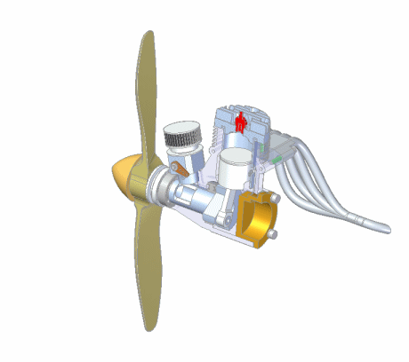
Solid Edge provides several ways to produce animations of your assemblies:
-
The Animation Editor in the Explode-Render-Animate environment (Tools tab→Environs group→ERA) provides an animation timeline editor you can use to coordinate the effects of motors, camera positions and movement, explosions, material appearances, and motion paths to create an animation.
-
Using automation objects and methods, you can also write your own programs to create animations frame-by-frame as you drag or reposition assembly components.
You create assembly animations using the Animation Editor tool (in the ERA environment Home tab→Animate group→Animation Editor) to add animation events to an animation timeline.
For more information on creating assembly explosions, see the Creating Exploded Views of Assemblies help topic.
Animation Editor tool overview
The Animation Editor command in the Explode-Render-Animate environment provides access to the Animation Editor tool.
The Animation Editor has a left and right pane, and various options for you to create, edit, view, and save animations of your Solid Edge assemblies.
Adding events to an animation
The process for adding events to an assembly animation depends on the type of event you want to add. This process is described for each event type in the material that follows.
When you add events to an animation, an event entry (A) is added to the event category in the left pane, and one or more event duration bars (B) are added to the right pane. For example, when you add a motor event to an assembly animation, a motor event entry (A) is added to the Motors category in the left pane, and an event duration bar (B) for the motor event is added to the right pane.
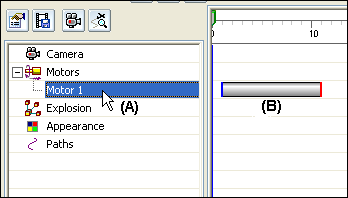
Using the left pane
The left pane of the Animation Editor displays the event categories you can include in an assembly animation:
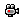 |
Camera Events |
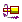 |
Motor Events |
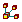 |
Explosion Events |
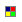 |
Appearance Events |
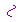 |
Motion Path Events |
You create and edit Camera, Appearance, and Motion Path events using the options on the Animation Editor. You create Motor and Explosion events outside of the Animation Editor. You can then add motor and explosion events to an animation using the Animation Editor.
After you have added events to an animation, the events are added to the appropriate event category, and are displayed in an event tree. When you add an exploded view configuration to an animation, the exploded view consists of numerous events, which are also collected into explode groups and event groups. You can expand and collapse the explode groups and event groups using the left pane in the Animation Editor. This is discussed in more detail later.
You can use the Select command to select one or more events or groups, and the associated parts and subassemblies highlight in the graphics window, Assembly PathFinder, and Explode PathFinder.
Using the right pane
The right pane provides an overview of the animation timeline. A series of event duration bars represent each event in the assembly animation.
The size and placement of an event duration bar indicates when the event occurs in the animation timeline and how long the event lasts. Some event types support an additional property, key frames, which is discussed in more detail later.
You can modify these event properties by selecting an event duration bar with the cursor, or with shortcut menu commands.

Basic user-interface elements in the right pane, as shown above, include:
-
(A) Frame Scale. You can use the Toggle Scale button to change the scale display between Frames and Seconds.
-
(B) Current Frame Indicator. The current frame is also the frame which is displayed in the graphic window. You can drag the Current Frame Indicator to another location to view individual frames in the animation. You can also use the Next Frame and Previous Frame buttons to move forward and back one frame at a time.
-
(C) Event Duration Bars. Notice that different colors are used at the start and end locations.
-
(D) Selected Event Duration Bar. Notice that a scale is displayed when a duration bar is selected. This can make it easier to precisely locate a duration bar with respect to the Frame Scale.
-
(E) Event Duration Bar Key Frame Indicator.
-
(F) Vertical Scroll Bar. Scroll the timeline display up and down.
-
(G) Horizontal Scroll Bar. Scroll the timeline display left and right.
Editing events with the cursor
-
Different cursor shapes are used in the right pane to indicate what type of edit is possible based on the current cursor position:
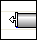
Move Start Time
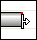
Move Stop Time
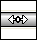
Move Event
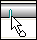
Move Key Frame
-
Editing events with shortcut menu commands
When you position the cursor over an event duration bar and right-click shortcut menu commands are available. The list of shortcut menu commands depends on what type of event duration bar you have selected. For example, when you select a motor event in the right pane, you can copy the event to the Clipboard, then paste or mirror the motor event to another position on the animation timeline.
For more information on the shortcut menu commands, see the Animation Editor tool Help topic.
Camera events
There are two methods available for defining a new camera path. You can select the Camera category entry in the left pane, right-click to display the shortcut menu, and then click Edit Definition to display the Camera Path Wizard. The Camera Path button on the Animation Editor tool also displays the Camera Path Wizard. The wizard guides you through the process of creating a camera path event. You can only have one camera path event in an assembly. You use the wizard to define the camera path direction, duration, number of frames per second, and preview the camera path animation.
Use the first page of the Camera Path Wizard to define the camera path direction. You can specify the direction to be clockwise or counterclockwise, or you can specify the direction using a series of existing named views.
-
Defining camera path by flying around the current view
When you define a camera path using the Fly Around Current View option, a closed, circular camera path is created. You can use the wizard to specify whether the camera path is clockwise or counterclockwise, but you cannot control the zoom level. To control the zoom level for the view you must set the Build Using Named Views option.
-
Using named views to specify camera path direction
When you define a camera path using the Build Using Named Views option, the camera path direction is determined by the order of the named views in the Key Frames list. For example, if the named views in the Key Frames list are ordered: Top, Front, Right; then the animation would show a gradual transition from the top view to the front view, then a gradual transition from the front view to the right view.
You can also create custom named views by first rotating the view of the assembly using the Rotate command. Then you can save the view orientation to a name using the Named Views command. You can then add the named views to the Key Frames list on page 2 of the Camera Path Wizard to define the direction for a new camera path.
-
Impact of perspective on camera paths and animations
The Perspective command and the Perspective options available with the View command impact both the completed animation and what you see in the Preview window when editing a camera path. For example, if you do not have perspective applied to the view, you may see the camera path curve in the Preview window. When you apply perspective to the view, you will not see the camera path curve.
Note:Although many factors influence the results of an animation, you should explore the perspective options to see which gives you the best animation results.
After you have created a camera path for an animated presentation, you can display the animation in Solid Edge using the Animation Editor. Use controls on the Animation Editor to play, stop, pause, and move forward or back frames in the animation.
You can also display and edit the camera path curve and camera positions along the camera path curve using the Animation Editor.
-
Displaying the camera path curve
The Show Camera Path button displays the camera path curve (A) in the graphics window. The keypoints (B) on the curve represent the key frame locations on the camera path. Key frames are discussed in more detail later. A camera path curve can be open or closed, depending on how you defined the camera path. When you use the Fly Around Current View option to create a camera path, it is closed. When you use the Build Using Named Views, it is typically open.
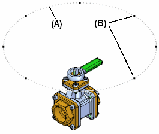
-
Editing camera curve and camera position
You can edit the camera path curve and camera positions using the Edit Definition command on the shortcut menu. This displays the Path Curve command bar. When you click the Draw Path Step, the camera path, camera orientation triad, and a Preview window are displayed. You can click the keypoints on the camera path curve to display the camera orientation triad and a preview of the camera display for that particular keyframe.
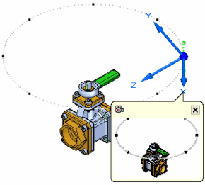
You can change the length and shape of the camera path by dragging the keypoint and tangency control handles to different positions. You can select an axis of the camera orientation triad and type a value on the command bar to change the camera angle. The Z axis on the orientation triad represents the direction the camera is pointing. When you click the Finish button on the command bar, changes you made to the camera curve and camera orientations are reflected in the animation. This provides a capability similar to raising, lowering, zooming, and changing the camera angle of a physical camera.
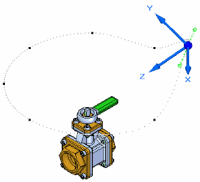
Motor events
The Motor command creates a rotary or linear motor to simulate motion on an underconstrained part. You add motor events to the animation timeline using the Edit Definition command on the shortcut menu when you select the Motor category entry in the left pane on the Animation Editor. The Edit Definition command displays the Motor Group Properties dialog box. Use it to specify which existing motors you want to use in the current animation. You can also specify other properties for the motor in the animation.
You can define one or more motor events for an assembly animation. You can control the timing of motor events so that they occur in an ordered fashion.
The Simulate Motor command displays a subset of the tools available with the Animation Editor. You can view the results of the motors you define outside the context of an animation.
Explosion events
You create exploded views of your assembly using the commands on the Explode group in the Explode-Render-Animate application. You save an exploded view configuration using the Display Configurations command.
You add an explosion to an animation using the Edit Definition command on the shortcut menu when you select the Explosion category in the left pane of the Animation Editor. The Edit Definition command displays the Explosion Properties dialog box, which allows you to specify the properties for the explosion event. For example, you can specify the exploded view configuration you want to use, whether the animation starts with the assembly collapsed or exploded, the animation order, and so forth. You can only define one exploded view configuration for an assembly animation.
When you add an explosion event to the left pane in the Animation Editor, duration bar entries are added for each event in the exploded view. It is not unusual for dozens of explosion sub-events to exist in the main explosion event. You can also edit the main explosion event later using the Edit Definition command on the shortcut menu in the left pane. For example, you may want to start the animation with the parts collapsed instead of exploded.
The event structure that is displayed in the Explode PathFinder tab is also displayed in the left pane of the Animation Editor.
-
Explode PathFinder and assembly animations
You can use the Explode PathFinder tab to control how parts move during an animation. For example, you may want all the fasteners in an assembly to animate at one time, even though the results of the Automatic Explode command placed them in different explode event groups. You can make these types of changes using the Explode PathFinder tab shortcut menu commands. For more information on the Explode PathFinder tab and modifying the explode event structure, see the Explode PathFinder tab topic.
Note:The Explode commands and modification of the explode event structure using Explode PathFinder cannot be done when the Animation Editor is displayed.
Appearance events
You create appearance events using the Appearance button on the Animation Editor. Use appearance events to change part colors and visibility during an animation. For example, you can create fade in and fade out effects for parts in the animation.
When you click the Appearance button, the Appearance command bar is displayed. Use the command bar to select one or more parts, and then define a starting and ending face style for the parts. When you click Finish, an appearance event is added to the left and right panes in the Animation Editor.
You can edit an appearance event using shortcut menu commands in either pane of the Animation Editor. When you select an appearance event in the left pane, you can use the Edit Definition command on the shortcut menu to re-display the command bar, so you can edit the selected parts, and the face styles used for the event.
Use shortcut menu commands in the right pane to add and remove frames from the event, cut, copy, paste, mirror, and insert events.
Motion path events
You create motion path events using the Motion Path button on the Animation Editor. When you click the Motion Path button, the Motion Path command bar is displayed. Use the command bar o select one or more parts, and then define a path curve you want the parts to follow. This can be useful in situations where you want parts to move along an assembly line or processing stations in an animation. Use options on the Motion Path command bar to specify whether motion path curve is open or closed, whether the curve is straight or blended, and so forth.
To edit a motion path event later, select the motion path event entry in the left pane, and then select the Edit Definition command on the shortcut menu to display the Motion Path command bar.
Key frames
When you create camera and motion path events, key frame indicators (A) are added to the event duration bar automatically.

The key frame indicators represent a recorded location in space relative to a position on the duration bar for a camera or motion path event. For example, when you define a camera path using the Named Views option, key frame indicators are added to the duration bar for each named view entry in the list. You can also add and remove key frames using the shortcut menu when you select an event duration bar for a camera or motion path event.
For a camera path event, the key frame indicators shows where the camera position matches the named view orientation at that point in the animation.
For motion path events, the key frame indicator shows where the part is located at that point in the animation.
You can move the key frame location on the event duration bar by dragging it with the cursor.
Cutting, copying, pasting, mirroring, and inserting animation events
In the right pane of the Animation Editor, use shortcut menu commands to cut, copy, paste, mirror, and insert certain types of events in an animation. For example, you can create an appearance event where a part changes color from 50% Visible to the Part Style, then copy and mirror the event so that it changes from the Part Style back to 50% Visible later in the animation.
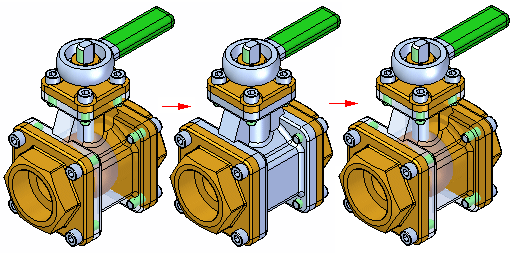
To copy and mirror an event:
-
Select the event in the right pane (A), and then click Copy on the shortcut menu.
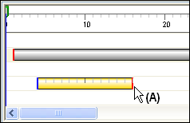
-
Position the cursor over the same line in the right pane as the original event, at the approximate location you want the new event (B). Then click Mirror on the shortcut menu.
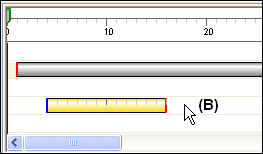
-
A mirrored copy of the event is created (C). Notice that the start and end point colors are reversed on the mirrored event. This visual clue can be helpful later.
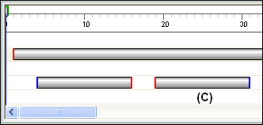
The same approach is used for pasting and inserting events. You can also cut an event, and then paste it in a different position. After you paste, mirror, or insert an event, you can modify the event using the other shortcut menu commands. For example, you can drag it to a new position on the timeline, and change its duration properties.
Some event types do not support copy, paste, mirror, and insert operations. For these event types, the shortcut menu commands are not available.
Saving an assembly animation as a movie
You can save an assembly animation in avi format with the Save As Movie button on the Animation Editor.
When you are working in Solid Edge Embedded Client and save an .avi file, the document is saved to an unmanaged location.
Creating animations programmatically
The SolidEdgeFramework.View automation object provides several methods and properties you can use to create and control various properties of animations, such as CreateMovieRecorder, BeginMovieRecording, and AddFrameToMovie.
Use this approach to creating animations when you use techniques other than the Animation Editor to define the motions of assembly components and the camera. For example, you can use this API to create complex animations that require relationship suppression, view orientation, and advanced formula computations to get a required animation movement.
How do I
Create an animation using the Animation EditorDefine a Camera Path for an Assembly Animation
Create a motor
Simulate a Motor
Modify flow lines in an exploded assembly
Modify an animation
Delete an Animation
Add frames or time to an animation event
Remove frames or time from an animation event
Play back an animation
Save a movie
Display flow lines in an exploded assembly
Display flow line terminators in an exploded assembly
Use a Surface Dial with the Animation Editor
Look up more details
Animation Editor ToolCamera Path Wizard
Camera Path Wizard (Page 1)
Camera Path Wizard (Page 2)
Camera Path Wizard (Page 3)
Rotational Motor and Linear Motor commands
Animation Editor command
Camera Path Wizard command
Simulate Motor command
Delete Animation command
Add Frames Command
Remove Frames Command
Save As Movie command
Add Frames Dialog Box
Animation Properties dialog box
Appearance command bar
Delete Animation Dialog Box
Duration Properties dialog box
Rotational Motor command bar
Linear Motor command bar
Motor Group Properties dialog box
Path command bar (Animation Editor Tool)
Remove Frames Dialog Box
Save As Movie dialog box
Save As Movie Options dialog box
Related Topics
Variable Table Motor commandVariable Table Motor workflow